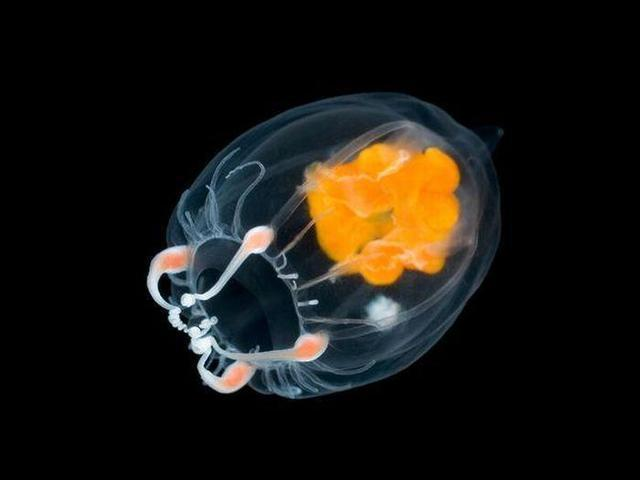
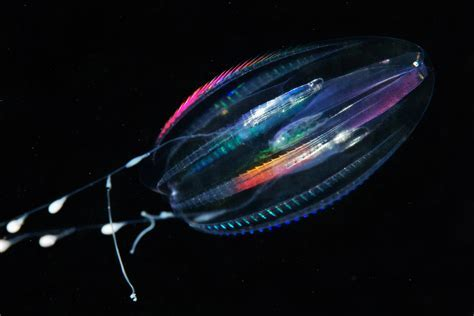
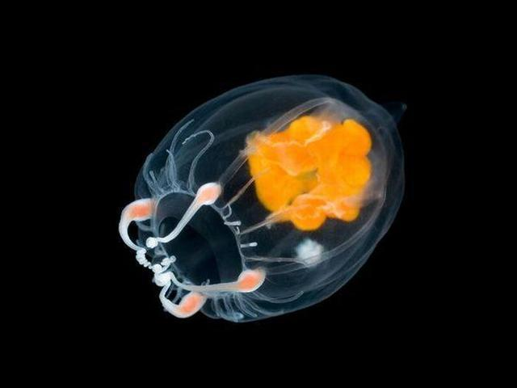
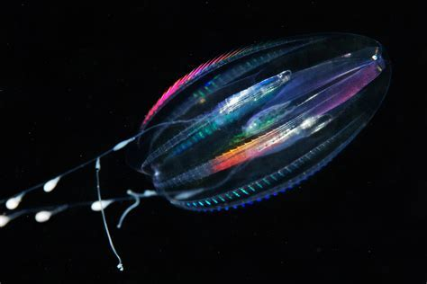

PHROMIA
BENTHOCODON

CTENOPHORE
PLANCTON

CALAMAR

CTENOPHORE

Comme pour tant d’autres phénomènes marins, on s’autoriserait presque à croire que la biofluorescence est d’origine extraterrestre. Plus de 80 % des océans sont inexplorés et, selon la NASA, nous en savons plus sur la surface de la Lune que sur nos propres fonds marins. Certains phénomènes comme celui-ci commencent à peine à être compris.
D’après David Gruber, biologiste marin et explorateur National Geographic, l’intérêt porté par les scientifiques à ce phénomène a grandi ces dix dernières années. Il est à l’origine de plusieurs avancées sur le sujet, et plus particulièrement d’une étude parue en 2019 qui montrait comment ces animaux produisent ces effets lumineux grâce à des molécules dont la science ignorait l’existence.
En 2014, il a prouvé dans une de ses études que la biofluorescence est monnaie courante chez plus de 200 espèces de poissons. Ses recherches ont également montré que certains requins ont la capacité de briller dans le noir ; une avancée révolutionnaire que National Geographic a incluse dans son classement des vingt plus grandes découvertes des années 2010.
PHROMIA
BENTHOCODON
CTENOPHORE
PLANCTON
CALAMAR
CTENOPHORE

Un triptérygion avec des zones ciblées de biofluorescence rouge lorsqu'elles sont stimulées par la lumière bleue de l'océan.
Dans le cas de la biofluorescence, les longueurs d’onde bleues du spectre lumineux sont réfléchies par la peau des animaux sous forme de lumière d’une couleur différente, généralement en vives teintes de vert, d’orange et de rouge.
L’océan ajoute une couche de complexité au phénomène. Nous, les humains, voyons la lumière en nuances de rouge, de vert et de bleu. Mais sous l’eau, notre vision faiblit. À mesure que l’on s’enfonce dans les profondeurs, certaines longueurs d’onde du spectre visible de la lumière sont éliminées. À environ six mètres, le rouge n’existe plus. À trente mètres, tout n’est virtuellement que bleu et vert.
Enfin, à l’étage bathypélagique (ou zone de minuit), à environ un kilomètre sous la surface, la lumière cesse. De nombreux animaux des fonds marins sont dotés de filtres oculaires jaunes leur permettant de détecter la bioluminescence d’autres poissons.
Cette limace de mer (Liparis gibbus) est la première espèce de l’Arctique chez laquelle on a découvert le phénomène de biofluorescence. Elle est à la fois verte et rouge, un rare cas de fluorescence multiple chez un animal. Pour dissiper petit à petit ces énigmes et découvrir le rôle qu’y joue la lumière, David Gruber et son équipe mettent au point des caméras imitant les yeux d’animaux marins biofluorescents afin d’observer le monde de leur point de vue. Lorsqu’ils ont découvert la biofluorescence chez les roussettes, ils ont fabriqué une caméra équipée de filtres spéciaux pour simuler la façon dont la lumière percute leurs yeux. Deux choses leur ont sauté aux yeux : les roussettes voient la biofluorescence verte qu’elles émettent elles-mêmes et elles peuvent accroître le contraste de leurs motifs fluorescents.
Ces dix dernières années, les chercheurs ont découvert plus de 200 espèces biofluorescentes.
Cependant, il existe si peu d’études pour expliquer comment et pourquoi ces animaux marins brillent, que les chercheurs ont plus de questions que de réponses. Selon les hypothèses, ce phénomène permettrait une communication inter-espèces, de trouver des partenaires, de se cacher pour échapper aux prédateurs ou encore de chasser des proies. Leurs recherches n’intéressent pas seulement le domaine de la science; elles ouvrent la voie à de meilleures pratiques en matière de conservation des espèces. Plus nous en savons sur la vie marine, mieux nous pourrons la protéger, cela est évident
La bioluminescence est la production de lumière « froide » Ces animaux marins privés de la lumière du soleil, émettent une lumière naturelle servant à communiquer entre eux ou encore à se protéger des prédateurs. La plupart des animaux marins produisent leur propre lumière ou hébergent des bactéries qui le font. Une aptitude qui leur permet de communiquer, de trouver leur proie, de se camoufler et bien plus encore.
Les abysses, littéralement & un domaine dont l'immensité est insondable, sont dans le langage courant le territoire des grandes profondeurs océanes, là où la lumière du jour ne pénètre jamais. Un monde étranger à l'homme, un environnement hors d'atteinte, démesuré et hostile, cachant parfois des terreurs irraisonnées.
Des chercheurs spécialistes des requins, en opération au large de la côte est de la Nouvelle-Zélande, ont fait une brillante découverte. Dans une nouvelle étude, publiée dans la revue Frontiers in Marine Science, les scientifiques ont découvert que trois espèces de requins des profondeurs sont en réalité bioluminescentes et produisent une légère lumière bleu-vert grâce à des cellules spécifiques présentes sur leur peau. Une des trois espèces, le Squale liche, atteint une longueur de près d’un mètre quatre-vingts, ce qui en fait le plus grand vertébré bioluminescent connu à ce jour. Les calmars géants, qui peuvent atteindre des tailles bien plus importantes, sont aussi connus pour produire de la lumière.
Le requin-lanterne à ventre noir (Etmopterus lucifer), un requin bioluminescent, vu du dessous. Ces animaux possèdent des cellules lumineuses qui tapissent leur face inférieure. Elles leur permettent de masquer leur silhouette des prédateurs qui rôdent au-dessous d’eux et produisent suffisamment de lumière pour s’adapter à leur environnement.

Les scientifiques estiment qu'au sein des fonds marins, trois-quarts des espèces sont bioluminescentes. Dans un tel environnement, la propension à générer de la lumière peut leur conférer un réel avantage. Les animaux des abysses utilisent la bioluminescence à toutes fins, que ce soit pour attirer leur proie ou pour dissuader les prédateurs.
La bioluminescence peut même permettre aux animaux des fonds marins de se camoufler. Au cœur de la zone aphotique, où la lumière du jour se fait rare, les individus bioluminescents peuvent faire disparaître leur silhouette en produisant suffisamment de lumière pour s’adapter à leur environnement. Cette ruse, connue sous le nom de contre-illumination, peut s’avérer particulièrement utile pour se protéger des prédateurs qui rodent au-dessous d’eux.
En janvier 2020, Jérôme Mallefet accompagné d'une équipe de scientifiques de l’Université catholique de Louvain ainsi que de l’Institut national de recherche sur l'eau et l'atmosphère de Nouvelle-Zélande ont passé un mois à bord d’un chalutier hauturier. Après avoir capturé les requins vivants, les chercheurs ont plongé les animaux dans un bassin d’eau de mer, dans une pièce plongée dans le noir et ont guetté les signes de bioluminescence. En raison du stress ou d’une possible timidité, seule une poignée des individus observés ont dévoilé leur lueur bleu-vert aux chercheurs. La peau des quelques animaux ayant osé révéler leur bioluminescence a été soumise a des analyses. Chez la plupart des organismes bioluminescents, c'est un composé appelé luciférine qui est à l'œuvre. La luciférine avec l’oxygène pour produire de la lumière. La lueur de certaines créatures lumineuses, évoluant dans les profondeurs, découle de leur rôle d’hôtes pour des colonies de bactéries bioluminescentes.

La phosphorescence et la bioluminescence sont un des phénomènes les plus surprenants des abysses.
Ce phénomène joue un grand rôle au sein des écosystèmes ainsi que dans les chaînes alimentaires permettant ainsi a la plus petite créature de survivre.
Ces recherches n’intéressent pas seulement le domaine de la science ; elles ouvrent la voie à de meilleures pratiques en matière de conservation des espèces. Plus nous en savons sur la vie marine, mieux nous pourrons la protéger.